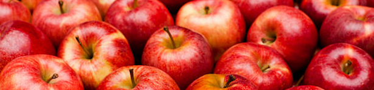
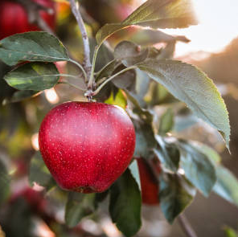

Everything About Apples
Apple A Day Keeps The Doctor Away!
Apples are one of the most popular fruits worldwide, cherished for their crisp texture and sweet-tart flavor. From classic varieties like Granny Smith and Fuji to newer hybrids, apples offer a wide range of tastes to suit any palate. They are not only delicious but also packed with essential nutrients, making them a perfect snack for any time of day. Whether eaten fresh, baked into pies, or turned into cider, apples have been a beloved part of human diets for centuries.
| Apple Varietys | Flavor Profile | Color | Rating (1-4) | HoneyCrisp | Sweet-tart | Red & hint of yellow | 1 |
|---|---|---|---|
| Granny Smith | Crisp and Tart | Green | 4 | Gala | Mildly sweet & Crisp | Red with Yellow Stripes | 3 |
| Fuji | Sweet & Juicy | Reddish-pink | 2 |
Known for their versatility, apples can be enjoyed in countless ways, from savory dishes to sweet desserts. Their health benefits are numerous, including a high fiber content that supports digestion and a wealth of antioxidants that promote overall wellness. Apples also have cultural significance, often symbolizing health and knowledge. As one of the most accessible and affordable fruits, they are a staple in many households, offering a simple yet satisfying way to nourish the body and delight the senses
